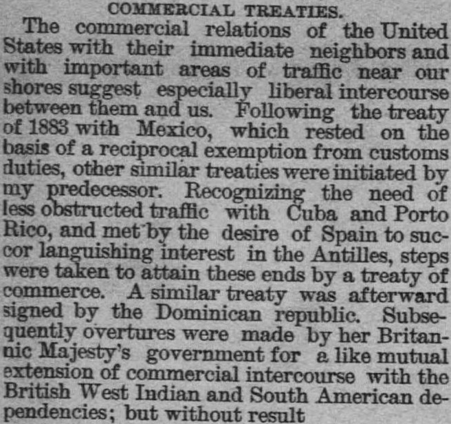
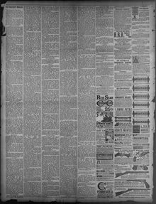

Recognizing the need of less obstructed traffic with Cuba and PortoReconociendo la necesidad de un tráfico menos obstruido con Cuba y Puerto
Gloucester County Democrat. Woodbury, N.J., December 10, 1885. Page 4. Published by J.D. Carpenter. A weekly newspaper, 1878–1932.Gloucester County Democrat. Woodbury, N.J., 10 de diciembre de 1885. Página 4. Publicado por J.D. Carpenter. Periódico semanal, 1878–1932. View the originalVer el original


See the full pageVer la página completaThe Gloucester County Democrat reported on December 10, 1885, that a commercial treaty had been signed by the Dominican republic following steps taken to establish less obstructed traffic with Cuba and Porto Rico. The newspaper also noted that subsequent overtures for a similar mutual extension of commercial intercourse were made by Her Britannic Majesty's government regarding British West Indian and South American dependencies, but these efforts yielded no result. Additionally, the excerpt urged Congress to recast appropriations for the diplomatic and consular service to ensure adequate salaries while returning notarial and official fees to the treasury.El Gloucester County Democrat dio cuenta el 10 de diciembre de 1885 de la firma de un tratado de comercio por la República Dominicana tras los pasos encaminados a franquear el tráfico con Cuba y Puerto Rico. Consignó asimismo la publicación que gestiones posteriores formuladas por el gobierno de Su Majestad Británica para ensanchar recíprocamente el comercio con las dependencias británicas antillanas y sudamericanas resultaron infructuosas. Por último, instó al Congreso a reformular el presupuesto del servicio diplomático y consular para dotarlo de haberes decorosos, restituyendo los derechos notariales y de cancillería al tesoro público.
FULL TEXT:TEXTO COMPLETO:
COMMERCIAL TREATIES.TRATADOS COMERCIALES.
The commercial relations of the United States with their immediate neighbors and with important areas of traffic near our shores suggest especially liberal intercourse between them and us. Following the treaty of 1883 with Mexico, which rested on the basis of a reciprocal exemption from customs duties, other similar treaties were initiated by my predecessor. Recognizing the need of less obstructed traffic with Cuba and Porto Rico, and met by the desire of Spain to succor languishing interest in the Antilles, steps were taken to attain these ends by a treaty of commerce. A similar treaty was afterward signed by the Dominican republic. Subsequently overtures were made by her Britannic Majesty's government for a like mutual extension of commercial intercourse with the British West Indian and South American dependencies; but without result.Las relaciones comerciales de los Estados Unidos con sus vecinos inmediatos y con importantes áreas de tráfico cerca de nuestras costas sugieren un comercio especialmente liberal entre ellos y nosotros. Siguiendo el tratado de 1883 con México, que descansaba sobre la base de una exención recíproca de derechos de aduana, otros tratados similares fueron iniciados por mi predecesor. Reconociendo la necesidad de un tráfico menos obstruido con Cuba y Puerto Rico, y encontrado por el deseo de España de socorrer un interés languideciente en las Antillas, se tomaron medidas para alcanzar esos fines mediante un tratado de comercio. Un tratado similar fue firmado después por la república dominicana. Posteriormente se hicieron propuestas por el gobierno de Su Majestad británica para una extensión mutua similar del comercio con las dependencias británicas de las Indias Occidentales y de América del Sur; pero sin resultado.
This collection gathers the coverage of the Dominican Republic in the American press, in the order it was published.Esta colección reúne la cobertura de la República Dominicana en la prensa estadounidense, en el orden en que se publicaron.